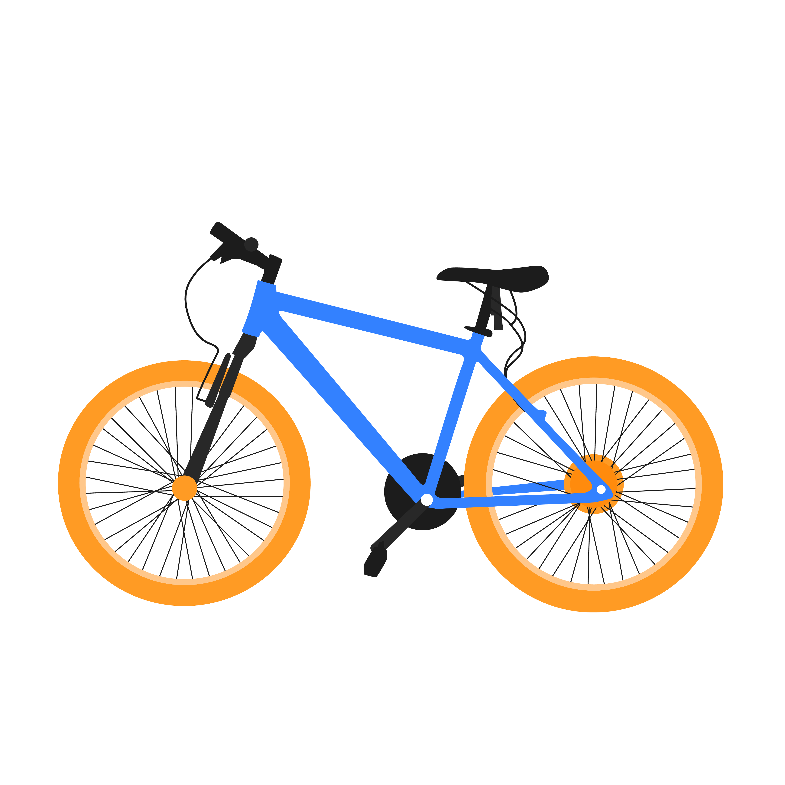

Elnathan's Corner
Get to know more about me


Computer programming is the process of designing and building an executable computer program to accomplish a specific computing result or to perform a specific task. Programming involves tasks such as: analysis, generating algorithms, profiling algorithms' accuracy and resource consumption, and the implementation of algorithms in a chosen programming language (commonly referred to as coding).
The word barista comes from Italian, where it means a male or female "bartender" who typically works behind a counter, serving hot drinks (such as espresso), cold beverages, and snacks; a skilled technician: someone who understands the science of coffee-making, knows how to use multiple brewing devices and machines, and can use their coffee knowledge to make good recommendations to customers.